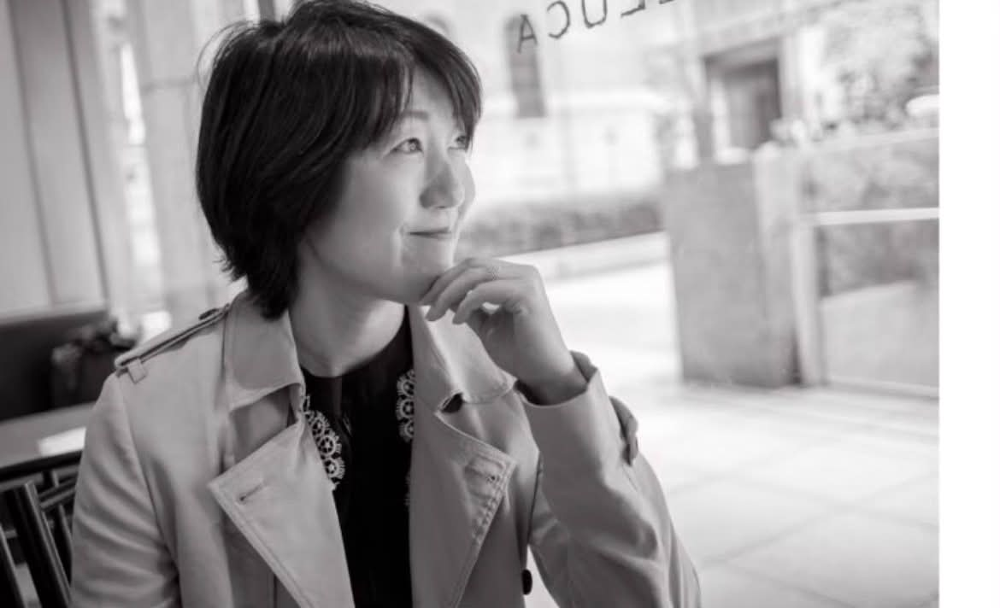

人を支える立場だからこそ、
誰にも話せないことがある。
部下のこと。
子どものこと。
家族のこと。
そして、自分自身のこと。
人は、教えられることで成長するのではありません。
自分の言葉を大切に聴いてもらえたとき、
自分で考え始めます。
灯サロンは、答えを教わる場所ではありません。
自分の言葉で語り、
互いの言葉に耳を傾け、
人との関わり方を育み直す対話の場です。
こんな感覚はありませんか
それは、技術の問題ではなく、関係性の問題かもしれません。
灯サロンとは
支える相手は、部下かもしれない。子どもかもしれない。親かもしれない。 受講生や、患者さんや、お客様かもしれない。
灯サロンは、「管理職のサロン」でも「親のサロン」でもありません。 人生の中で「支える側」になった人が、職業や立場を越えて集まり、 同じテーマで深く対話する場です。
灯サロンでないもの
答えを教わる場所。
癒やされて、終わる場所。
誰かが灯し、誰かがただ照らされる場所。
灯サロンであるもの
尊重されながら、挑戦できる場。
問いを持ち続ける仲間と出会う場。
一人の灯が、また誰かの灯になる場所。
一人の灯が、誰かの灯になる。 ここでは、あなたも場をつくる人であり、誰かの学びに貢献する人であり、 同時に支えられる人です。
サロンの仕組み
前半は、私から短く、考え方を差し出します。 あとの時間はすべて、あなた自身の現場に持ち帰るための対話です。 仕事の話も、家庭の話も、分けません。人との関わり方は、どこでも同じだからです。 「話してよかった」で終わるのではなく、「明日から、少し関わり方を変えてみよう」—— そう思える時間を目指しています。
学びは、会の中で終わりません。毎回ひとつ、現場での「実験」を持ち帰り、 翌月にその結果を持ち寄ります。うまくいったかどうかではなく、 「何が起きたか」を共有します。
実験の例
「今週は、部下の話を3分間、質問だけで聴く。」
「家族との会話で『どう思う？』を一回増やす。」
「会議で、一番最後に自分の意見を言う。」
毎月書くのは3つだけ。「今月、一番心が動いた出来事」「今月、実験したこと」「来月、試してみたいこと」。 誰にも提出しません。一年後に読み返すと、自分がどう変わったかが見えてきます。
月1回30分、オンラインで話します。テーマは「今月の実験」「困っていること」「来月の一歩」。 私がその場にいなくても、対話は続いていきます。
東京・名古屋などで全員が集まり、「今年、自分は何を育てたか」を語ります。 講演会でも、発表会でもありません。物語を持ち寄る場です。
毎回、誰かがテーマを提供する人になり、誰かが問いを返す役になり、 誰かが気づきをまとめます。運営者だけが場をつくるのではありません。
主宰者

企業研修講師・コーチとして、官公庁から大手企業まで、 コミュニケーション、コーチング、リーダーシップ、マネジメントなど 多様なテーマの研修を数多く手がけてきました。 演習を通した体感型の「気づき」と、受講生同士の相互コミュニケーションの構築を大切にしています。
その実感が、自ら考え、自ら選び、自ら行動する力を育みます。 企業研修も、コーチングも、保護者支援も——私がしてきた仕事は、 すべて「支える人が、よりよい関係性を築くための支援」でした。 灯サロンは、その延長線上にあります。
参加案内
| 形式 | 月額制メンバーシップ |
|---|---|
| 月例会 | 月1回・オンライン開催（1.5〜2時間） |
| 月会費 | 8,800円〜11,000円（税込・予定） ※正式な金額は体験会にてご案内します。 |
| 体験参加 | 「灯サロン体験会」に1回ご参加いただけます。雰囲気を知ってからご入会ください。 |
| その他 | 灯グループ（月1回30分・オンライン）／灯の集い（年数回・東京・名古屋など） |
全国どこからでも参加できます。子育て中の方、介護中の方も、無理のない形でご参加いただけます。